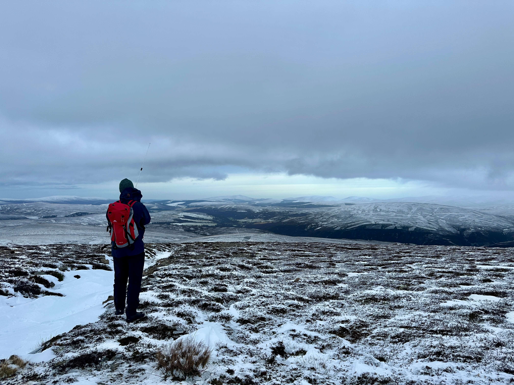

Cnap Chaochan Aitinn
40 on 40 on 40!
Fraser shared last night that the snow gates were shut due to the snow. When the sun came up this morning, it was a glorious sunny, crisp, cold day with amazing views of the hills. At 8:30am when I was about to leave the gates were still shut…I was going with a work friend up the hill and he felt confident the gates would be opened by 10. After passing endless signs telling me the road was closed, and finally at 10:15 am when I arrived at Cock Bridge…they were still shut. My friend was about 15 minutes behind me, and so I waited for him by Corgarff Castle.
{kind=link}
I’d looked at an alternative route to the summit from here, in case the gates were closed. It is possible but it’s twice as far, at around 18.5 km each way.

This was too far for my friend and if I was going to do it, he’d maybe only come part way. I was also trying to calculate how long we’d be and if I’d get back home in time for birthday tea with the family! As we were chatting we heard a loud rumbling of a gritter coming along the road. We watched him go up past the trees to where the gate is…road noise stops…engine quietens…CLANG! of metal against metal… that would be the gates being opened! So we headed back and got to the snow gates and sure enough he’d opened them and was heading up. He gave us the thumbs up and we followed.
{kind=link}
Once he opened the gates at the ski centre we were off to Tomintoul. We parked in the village opposite the hotel, rather than the parking on the route, mostly to be certain we could drive in and out again, and got ready to roll. At 9.9 km each way, this was a much more reasonable distance, and on a good day (i.e. not today) would probably only take about an hour to 1:15hrs to ride.
{kind=link}
The track down to the bridge (around 5 km) was absolutely treacherous with ice and in some places was just sheet ice across the whole track. I only fell off once and somehow managed to do a magic trick of falling onto my feet in a standing position as the bike slid out from under me and away down the road. We dropped our seats, put out our feet as stablisers and skated down some parts of it. The track is also quite undulating and several ups and downs to make you groan.
I just happened to check my phone and saw Fraser had spotted. We were down in the valley by the river and I didn’t expect much luck (although I was getting phone signal of course), and put out a call to him. He was in a QSO with GM0HLV but then we made contact. Chris was setting up but we kept going and when I checked later I’d missed him.
{kind=link}
{kind=link}
The bridge across the river wasn’t much better, probably made worse by the fact cold air can get under as well as above it, but we made it over okay. We met some coos at the remote Wester Gaulrig Cottage, and at this point had probably been going for about 50 minutes.
{kind=link}
We were past half way but still plenty to go, and now the steeper parts of the route were upon us. We could see the summit in the distance, and partially doubted that it was correct as “it seemed so far away”. We were correct, it was the summit!

I dumped my bike at the base of the final ascent, but my friend Mike, on his ebike, gave it a shot to get to the top. The snow had drifted much more here and snow pattern told tales of strong winds. The cloud was coming in now and the good views across to Ben Avon and surroundings had gone, with only huge clouds looming over the distant high summits.
{kind=link}
We made it at 12:30, 1.5 hours after leaving Tomintoul, and much later than my alert. Fraser and Chris were just back at their landys for my first two QSOs on Cnap Chaochan Aitinn. I called a few more times on 2m but didn’t have any luck. I wasn’t that patient with it though and chose not to setup the slim g but just go straight to 40m … I’d come all this way, I couldn’t leave without the 40 on 40 on 40! The wind was brutal and oh so cold. We did have some equipment that we could hide behind, and took some shelter there whilst I tried to setup on 40m.
{kind=link}
I‚Äôm sure I could‚Äôve used the small towers there to my benefit, but I was also wary of the wind turbine and getting wire caught in it, so I setup my mast down wind of it, trying to keep it close enough so I could operate from the shelter. Typically, as soon as I spotted and called CQ once the mast moved, then fell. It was tricky finding ground to get the pegs in for the guys‚Ķso I recruited another guy to hold the mast whilst he ate his super noodles!
{kind=link}
{kind=link}
I managed 6 on 40m, including a very nice summit to summit with Colin, M1BUU, as above, before I had to call QRT on the pile up. It was just too cold in the wind, even in the “shelter”. Quickly packed up and whilst admiring the views I realised the wind turbine noise had stopped and there was, in fact, no wind whatsoever! I got the HT back out and messaged Dave, MM7HMA, a local who’s just past his test and was keen to get some QSOs, and we had a nice chat. The stillness didn’t last and the return of the wind reminded us it was time to head back.
{kind=link}
{kind=link}
{kind=link}
Back to the bike - still there üòÖ- and back to the car. It‚Äôs mostly downhill, but still a few steep climbs as the path goes up and down. The temperature had come up a little, and a fair amount of ice had melted so the journey was less hazardous. I was back home in plenty of time.
{kind=link}
Not quite the S2S action hoped for, but still a successful trip and good day out! üéÇPlus one more complete for Fraser üòÖ
I think no-one comes here as there are other summits in the area you’d do first, but the fact you can cycle right to the top does make it quite a unique one, plus with plenty of refreshment options in Tomintoul for afterwards!
{kind=link}